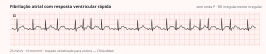
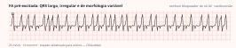
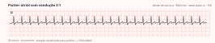

Cardiologia · 75 min · ESC 2024 · monografia
A diretriz europeia de 2024 reorganizou o cuidado em quatro letras, tirou o sexo do escore de risco embólico, encurtou de 48 para 24 horas a janela em que se cardioverte sem preparo, promoveu a ablação a primeira linha na fibrilação paroxística e nomeou como classe III práticas que eram rotina — reduzir a dose do anticoagulante “porque o paciente é idoso”, somar antiagregante, negar anticoagulação por escore de sangramento alto. Este texto a percorre na ordem em que ela pensa o paciente, com doses e cortes transcritos da fonte.
A fibrilação atrial multiplica por cinco o risco de AVC isquêmico, e um em cada cinco AVCs está associado a ela; o risco de desenvolvê-la ao longo da vida chega a um em três no idoso. Daí a tese do documento: a arritmia é o desfecho visível de uma doença atrial com causa quase sempre tratável, e cuidar só do ritmo é tratar a metade barata do problema. O AF-CARE são quatro domínios percorridos sempre e em ordem — [C] comorbidades, [A] evitar AVC, [R] reduzir sintomas, [E] reavaliação dinâmica.
flowchart TD A["FA documentada em ECG"] --> C["[C] Comorbidades
PA 120-129 · perder 10% do peso
álcool até 3 doses por semana
apneia · SGLT2 se IC"] C --> B["[A] Evitar AVC
CHA₂DS₂-VA · corrigir fatores
de sangramento modificáveis"] B --> D{"CHA₂DS₂-VA"} D -->|"2 ou mais"| E["Anticoagular · classe I"] D -->|"igual a 1"| F["Anticoagular após decisão compartilhada · IIa"] D -->|"zero"| G["Sem anticoagulante agora
reavaliar periodicamente"] E --> R["[R] Reduzir sintomas
frequência sempre · ritmo se indicado"] F --> R G --> R R --> S["[E] Reavaliação dinâmica
risco embólico · sangramento
adesão · sintomas"] S --> C
Arritmia supraventricular com ativação atrial descoordenada e perda da contração atrial efetiva. No eletrocardiograma: ausência de ondas P discerníveis e regulares e ativação ventricular irregular, sem padrão nenhum de RR — na ausência de bloqueio atrioventricular, porque um bloqueio total sobreposto regulariza os RR e desfaz a assinatura.

A diretriz exige documentação eletrocardiográfica antes de estratificar e tratar: ECG de 12 derivações, ou dispositivo de uma ou múltiplas derivações que produza traçado — não serve vestível de fotopletismografia. Em monitorização ambulatorial, 30 segundos ou mais já indicam preocupação clínica; nos dispositivos implantados, episódio atrial de alta frequência dura mais de 5 minutos com frequência atrial ≥170 bpm e precisa de inspeção visual, porque parte é artefato.
| Recomendação | Classe |
|---|---|
| Eletrocardiograma para estabelecer o diagnóstico e iniciar o tratamento | IA |
| Ecocardiograma transtorácico quando for orientar decisão terapêutica | IC |
| Padrão temporal | Definição |
|---|---|
| Primeiro diagnóstico | Não diagnosticada antes, independentemente de sintoma, padrão ou duração |
| Paroxística | Termina espontaneamente em até 7 dias, ou com intervenção; a maioria dos paroxismos dura menos de 48 h |
| Persistente | Não autolimitada, corte de 7 dias. De longa duração = ≥12 meses contínuos com controle de ritmo ainda na mesa |
| Permanente | Nenhuma nova tentativa de restaurar o sinusal está planejada, após decisão compartilhada — rótulo de decisão, não de eletrofisiologia |
A forma de rastrear importa: o rastreamento de ponto único — um ECG na consulta, uma vez — não aumenta a detecção. O que aumenta detecção e prescrição de anticoagulante é o rastreamento prolongado: no STROKESTOP, ECG de derivação única duas vezes ao dia por duas semanas aos 75 e 76 anos reduziu discretamente morte, AVC, embolia e sangramento grave (razão de risco 0,96).
| Recomendação | Classe |
|---|---|
| Revisão do eletrocardiograma por médico para dar o diagnóstico definitivo | IB |
| Avaliação rotineira do ritmo em todo contato assistencial de pessoas com ≥65 anos | IC |
| Rastreamento populacional prolongado por ECG com ≥75 anos, ou ≥65 com fatores do CHA₂DS₂-VA | IIaB |
Este é o domínio que o resumo pula e a diretriz põe em primeiro lugar, porque tratar a comorbidade reduz a recorrência: é tratamento antiarrítmico por outra via — ablacionar sem mexer no substrato é operar tecido que segue se deteriorando.
| Recomendação | Classe |
|---|---|
| Identificar e manejar fatores de risco e comorbidades, parte integral do cuidado | IB |
| Tratamento anti-hipertensivo, para reduzir recorrência | IB |
| Diuréticos na insuficiência cardíaca congestiva | IC |
| Terapia otimizada da insuficiência de fração reduzida | IB |
| Inibidor de SGLT2 na insuficiência cardíaca, independentemente da fração | IA |
| Controle glicêmico no diabetes | IC |
| Perda de peso com alvo de ≥10% em sobrepeso e obesidade | IB |
| Exercício individualizado na paroxística ou persistente | IB |
| Reduzir álcool para ≤3 doses padrão (≤30 g) por semana | IB |
| Bariátrica com IMC ≥40 kg/m² se há controle de ritmo planejado | IIbC |
| Manejo da apneia obstrutiva do sono | IIbB |
| Rastrear apneia obstrutiva do sono usando apenas questionários de sintomas | IIIB |
| Componente | Definição na diretriz | Pontos |
|---|---|---|
| C insuficiência cardíaca | Sinais e sintomas independentemente da fração, ou fração ≤40% mesmo assintomática | 1 |
| H hipertensão | PA de repouso >140/90 mmHg em duas ocasiões, ou anti-hipertensivo em uso | 1 |
| A₂ idade ≥75 anos | Risco contínuo com a idade; dois pontos por praticidade | 2 |
| D diabetes | Tipo 1 ou 2, ou uso de hipoglicemiante | 1 |
| S₂ AVC, AIT ou tromboembolismo prévio | Risco de recorrência muito elevado | 2 |
| V doença vascular | Coronariopatia — infarto, angina, revascularização, doença significativa em imagem — ou doença vascular periférica, incluindo claudicação, intervenção sobre a aorta abdominal e placa aórtica complexa | 1 |
| A idade 65–74 anos | Excludente com o item anterior | 1 |
O poder preditivo de todos os escores é modesto, e a diretriz pede que se pesem marcadores fora da conta — câncer, doença renal crônica, troponina, peptídeo natriurético, aumento atrial. O limiar aceito para anticoagular gira em torno de 0,6% a 1,0% de eventos por ano.
| Recomendação | Classe |
|---|---|
| Anticoagulação oral na fibrilação clínica de risco embólico elevado | IA |
| CHA₂DS₂-VA ≥2 como indicador de risco elevado para iniciar anticoagulação | IC |
| Anticoagulação em todos com cardiomiopatia hipertrófica ou amiloidose, independentemente do escore | IB |
| Reavaliação periódica do risco embólico | IB |
| CHA₂DS₂-VA =1 deve ser considerado risco elevado, com decisão compartilhada | IIaC |
| Direto na subclínica de dispositivo, com risco elevado e sem alto risco de sangramento | IIbB |
| Antiagregante em vez da anticoagulação | IIIA |
| Padrão temporal para decidir a anticoagulação | IIIB |
Cardiomiopatia hipertrófica e amiloidose anticoagulam sempre — nelas o escore não se aplica — e a reavaliação periódica é classe I, porque quem soma 1 hoje pode somar 3 em dois anos. O benefício estabelecido vale para a fibrilação clínica: na subclínica de dispositivo, o ARTESiA mostrou redução de AVC ou embolia com apixabana frente ao ácido acetilsalicílico (razão de risco 0,63), mas com mais sangramento maior — daí a classe IIb.
CHA₂DS₂-VA = 2: hipertensão 1 + idade 65–74 anos 1 — o sexo feminino não pontua mais. Escore ≥2 é anticoagulação classe I, com direto preferencial. As duas ideias da pergunta são classe III: decidir pelo padrão temporal (III B) e usar antiagregante como alternativa (III A).
flowchart TD
A["FA clínica documentada em ECG"] --> B{"Cardiomiopatia hipertrófica
ou amiloidose cardíaca?"}
B -->|"sim"| C["Anticoagular sempre
independente do escore · classe I"]
B -->|"não"| D["Calcular CHA₂DS₂-VA
sem ponto por sexo"]
D --> E{"Pontuação"}
E -->|"2 ou mais"| F["Anticoagular · classe I"]
E -->|"igual a 1"| G["Anticoagular após decisão compartilhada · IIa"]
E -->|"zero"| H["Sem anticoagulante agora
reavaliar em intervalos definidos"]
C --> I{"Prótese mecânica ou estenose
mitral moderada a grave?"}
F --> I
G --> I
I -->|"sim"| J["Antagonista da vitamina K
INR alvo 2,0 a 3,0"]
I -->|"não"| K["Anticoagulante oral direto
DOSE PLENA salvo critério de bula"]
J --> L["Corrigir fatores de sangramento modificáveis
PA · álcool · AINE · anemia · rim"]
K --> L
Os quatro diretos foram no mínimo não inferiores à varfarina, com 50% menos hemorragia intracraniana. Na metanálise de 71 683 pacientes, a dose plena reduziu AVC ou embolia (RR 0,81), mortalidade (RR 0,90) e sangramento intracraniano (RR 0,48).
| Recomendação | Classe |
|---|---|
| Diretos preferenciais à varfarina, exceto em prótese mecânica e estenose mitral moderada a grave | IA |
| INR alvo 2,0–3,0 quando o antagonista da vitamina K for prescrito | IB |
| Trocar para direto quem não mantém a faixa terapêutica (TTR <70%) | IB |
| Manter TTR acima de 70%, com INR frequente e educação do paciente | IIaA |
| Manter a varfarina, em vez de trocar, em paciente ≥75 anos estável com polifarmácia | IIbB |
| Dose reduzida de direto sem preencher os critérios específicos da droga | IIIB |
| Fármaco | Dose plena | Critério de redução | Dose reduzida |
|---|---|---|---|
| Apixabana | 5 mg 12/12 h | Dois dos três: idade ≥80 anos; peso ≤60 kg; creatinina ≥133 µmol/L (≈1,5 mg/dL) | 2,5 mg 12/12 h |
| Dabigatrana | 150 mg 12/12 h | Qualquer um: idade ≥80 anos; verapamil. Caso a caso: 75–80 anos; clearance 30–50 mL/min; gastrite, esofagite ou refluxo; outro risco de sangramento | 110 mg 12/12 h |
| Edoxabana | 60 mg 1×/dia | Qualquer um: clearance 15–50 mL/min; peso ≤60 kg; ciclosporina, dronedarona, eritromicina ou cetoconazol | 30 mg 1×/dia |
| Rivaroxabana | 20 mg 1×/dia, com alimento | Clearance 15–49 mL/min | 15 mg 1×/dia |
Tabela 11: a dose plena é a regra; a redução é exceção com critério escrito.
Reduz — mas pelo motivo certo. São necessários dois dos três critérios, e ele tem idade ≥80 anos e peso ≤60 kg; a creatinina não conta aqui. Com só um deles — 82 anos, 72 kg, creatinina normal — manter 5 mg 12/12 h seria obrigatório. O argumento “idoso e magrinho” apenas coincidiu com o critério.
| Recomendação | Classe |
|---|---|
| Manejo dos fatores modificáveis de sangramento em todo candidato | IB |
| Usar escores de sangramento para decidir iniciar ou suspender a anticoagulação | IIIB |
| Interromper a anticoagulação e investigar o sangramento ativo até resolvê-lo | IC |
| Complexo protrombínico na varfarina, com sangramento grave ou em sítio crítico | IIaC |
| Antídoto específico em usuário de direto, idem | IIaB |
| Oclusão cirúrgica do apêndice adjuvante à anticoagulação, na cirurgia cardíaca | IB |
| Oclusão cirúrgica adjuvante na ablação endoscópica ou híbrida | IIaC |
| Oclusão percutânea se há contraindicação ao anticoagulante de longo prazo | IIbC |
É a base inicial de quase todo paciente. No agudo, antes de qualquer droga, procurar e tratar a causa: sepse, sobrecarga de volume, choque cardiogênico — resposta a 140 no séptico não se trata com bloqueio nodal agressivo.
| Recomendação | Classe |
|---|---|
| Controle de frequência como terapia inicial aguda, adjuvante ao ritmo, ou estratégia única | IB |
| Betabloqueador, diltiazem, verapamil ou digoxina como primeira escolha se fração >40% | IB |
| Betabloqueador e/ou digoxina se fração ≤40% | IB |
| Alvo inicial leniente, repouso <110 bpm; estrito só se segue sintomático | IIaB |
| Combinação se uma droga não controla, evitando bradicardia | IIaC |
| Ablação do nó com marca-passo em quem não responde ao controle intensivo | IIaB |
| Ablação do nó com ressincronização na permanente muito sintomática com internação por insuficiência cardíaca | IIaB |
| Amiodarona, digoxina ou landiolol IV na instabilidade ou fração muito baixa | IIbB |
| Fármaco | Intravenoso | Manutenção oral |
|---|---|---|
| Metoprolol tartarato | 2,5–5 mg em bolus em 2 min, até 15 mg cumulativos | 25–100 mg 12/12 h |
| Orais | — | Metoprolol succinato 50–200 mg 1×/dia · bisoprolol 1,25–20 mg 1×/dia · carvedilol 3,125–50 mg 12/12 h |
| Esmolol | 500 µg/kg em 1 min, depois 50–300 µg/kg/min | — |
| Landiolol | Bolus opcional de 100 µg/kg em 1 min, depois 10–40 µg/kg/min; no crítico com disfunção cardíaca ou choque séptico, começar com 1–10 µg/kg/min | — |
| Verapamil FE ≤40% | 2,5–10 mg em bolus em 5 min | 40 mg 12/12 h até 480 mg de liberação prolongada 1×/dia |
| Diltiazem FE ≤40% | 0,25 mg/kg em bolus em 5 min, depois 5–15 mg/h | 60 mg 8/8 h até 360 mg de liberação prolongada 1×/dia |
| Digoxina | 0,5 mg em bolus (0,75–1,5 mg em 24 h divididos) | 0,0625–0,25 mg 1×/dia |
| Amiodarona | 300 mg em 250 mL de glicose 5% em 30–60 min, de preferência em veia central, depois 900–1 200 mg em 24 h | 200 mg 8/8 h por 4 semanas, depois 200 mg/dia |
Tabela 12 da diretriz. O selo FE ≤40% marca os contraindicados com fração de ejeção ≤ 40% — é ressalva clínica, não classe de recomendação. Todos os fármacos de frequência são contraindicados no Wolff-Parkinson-White — inclusive a amiodarona intravenosa.
“Escolher entre frequência e ritmo” é dicotomia de prova; na prática a maioria recebe combinação. O que aumentou o peso do controle de ritmo foi o EAST-AFNET 4 — implementá-lo no primeiro ano após o diagnóstico reduziu morte cardiovascular, AVC e internação, com 80% tratados por antiarrítmico e não por ablação —, somado ao CASTLE-AF e ao CASTLE-HTx na fração reduzida. O CABANA, em contraponto, não mostrou diferença de mortalidade.
| Recomendação | Classe |
|---|---|
| Cardioversão elétrica na instabilidade hemodinâmica aguda ou em piora | IC |
| Cardioversão elétrica ou farmacológica na persistente sintomática | IIaB |
| Esperar para ver a reversão espontânea dentro de 48 h do início, sem comprometimento hemodinâmico | IIaB |
| Controle de ritmo dentro de 12 meses do diagnóstico em selecionados com risco de eventos | IIaB |
flowchart TD
A["FA com resposta ventricular rápida"] --> B{"Instabilidade hemodinâmica?"}
B -->|"sim"| C["Cardioversão sincronizada IMEDIATA
anticoagular assim que possível · classe I"]
B -->|"não"| D["Tratar a causa aguda
sepse · congestão · tireoide"]
D --> E{"Fração de ejeção"}
E -->|"acima de 40%"| F["Betabloqueador OU diltiazem OU verapamil
digoxina isolada ou associada"]
E -->|"40% ou menos"| G["Betabloqueador e/ou digoxina
NÃO usar verapamil ou diltiazem"]
F --> H["Alvo inicial leniente
repouso abaixo de 110 bpm"]
G --> H
H --> I{"Segue sintomático ou
suspeita de taquicardiomiopatia?"}
I -->|"não"| J["Manter controle de frequência
seguir o AF-CARE"]
I -->|"sim"| K["Controle mais estrito
e discutir controle de ritmo"]
K --> L{"Paroxística?"}
L -->|"sim"| M["Ablação é PRIMEIRA LINHA
ou antiarrítmico conforme substrato"]
L -->|"não"| N["Antiarrítmico conforme substrato
ablação se refratário ou intolerante"]
| Recomendação | Classe |
|---|---|
| Diretos preferenciais à varfarina em quem vai à cardioversão | IA |
| Anticoagulação ≥3 semanas — direto com adesão ou INR ≥2,0 — antes de cardioversão programada | IB |
| Transesofágico se as 3 semanas não foram cumpridas, para excluir trombo | IB |
| Anticoagulação por ao menos 4 semanas em todos após a cardioversão, prolongada em quem tem fator de risco, mesmo se o sinusal voltou | IB |
| Anticoagular o quanto antes na cardioversão não programada | IIaB |
| Repetir o transesofágico se havia trombo | IIaC |
| Cardioversão precoce sem anticoagulação ou transesofágico com duração maior que 24 h, ou quando cabe aguardar | IIIC |
É menos eficaz que a elétrica, e os números estão inflados pela reversão espontânea: 76% a 83% dos casos de início recente revertem sozinhos — 55% a 66% já em 24 horas.
| Recomendação | Classe |
|---|---|
| Flecainida ou propafenona IV no início recente, excluindo hipertrofia grave, fração reduzida e coronariopatia | IA |
| Vernakalant IV, excluindo coronariana recente, fração reduzida e estenose aórtica grave | IA |
| Amiodarona IV quando há hipertrofia grave, fração reduzida ou coronariopatia | IA |
| Pílula no bolso — dose oral única de flecainida ou propafenona — na paroxística infrequente, validada no hospital | IIaB |
| Cardioversão farmacológica em disfunção sinusal, bloqueio atrioventricular ou QTc >500 ms sem pesar proarritmia e bradicardia | IIIC |
Não sem preparo. Acima de 24 horas — este é o número da ESC 2024, não 48 — cardioverter sem anticoagulação apropriada ou sem transesofágico é classe III. As saídas legítimas são 3 semanas de anticoagulação antes, ou transesofágico agora excluindo trombo; nos dois caminhos, 4 semanas depois, e manutenção pelo CHA₂DS₂-VA — aqui já 1 pela hipertensão. Só se cardioverte de imediato na instabilidade.
A escolha do antiarrítmico de manutenção é ditada pelo coração que o paciente tem, e a lógica é a proarritmia: classe IC em coração isquêmico ou hipertrofiado gera taquicardia ventricular; prolongador de QT gera torsades.
| Recomendação | Classe |
|---|---|
| Amiodarona na fração reduzida, vigiando toxicidade extracardíaca | IA |
| Dronedarona para ritmo de longo prazo, incluindo fração levemente reduzida, preservada, doença isquêmica ou valvar | IA |
| Flecainida ou propafenona, excluindo disfunção sistólica, hipertrofia grave e coronariopatia | IA |
| Betabloqueador, diltiazem ou verapamil junto com flecainida ou propafenona | IIaC |
Na prática: coração normal aceita flecainida 50–150 mg 12/12 h ou propafenona 150–300 mg 8/8 h, sempre com bloqueador nodal; coração isquêmico, valvar, hipertrofiado ou de fração preservada vai de dronedarona; fração reduzida, de amiodarona 200 mg/dia. Depois da ablação, antiarrítmico por 2 a 3 meses reduz a recorrência precoce, não a tardia.
A mudança mais cobrada está aqui: na paroxística a ablação não exige mais falha prévia de antiarrítmico. O isolamento das veias pulmonares segue sendo a pedra angular. Eventos adversos graves vão de 2,9% a 7,2%, com mortalidade em 30 dias abaixo de 0,1%.
| Recomendação | Classe |
|---|---|
| Decisão compartilhada ao considerar ablação, pesando risco, benefício e recorrência | IC |
| Ablação na paroxística ou persistente resistente ou intolerante a antiarrítmico | IA |
| Ablação como primeira linha do controle de ritmo na paroxística | IA |
| Ablação na fração reduzida com alta probabilidade de taquicardiomiopatia | IB |
| Ablação em selecionados com fração reduzida, para reduzir internação e morte | IIaB |
| Ablação na bradicardia da arritmia ou pausas, para evitar marca-passo | IIaC |
| Ablação como primeira linha em selecionados com persistente | IIbC |
| Anticoagulação ao menos 3 semanas antes da ablação, em risco elevado | IC |
| Anticoagulação ininterrupta no procedimento | IA |
| Anticoagulação por ao menos 2 meses após a ablação em todos, qualquer que seja o ritmo | IC |
O quarto domínio é o que menos aparece em resumo e mais aparece em prova: o risco não é estático. A reavaliação periódica cobre o escore tromboembólico (classe I), os fatores modificáveis de sangramento, a adesão e a dose, os sintomas e a estratégia de ritmo. O ecocardiograma atravessa os quatro domínios: acha a comorbidade que sustenta a arritmia, detecta a estenose mitral que muda a escolha do anticoagulante, exclui trombo no apêndice antes da cardioversão, define a fração que separa os fármacos de frequência e mede o átrio esquerdo, que prediz recorrência após ablação. A escala mEHRA, análoga à classe funcional da New York Heart Association, é o instrumento que a diretriz sugere para medir sintoma na consulta.
A fibrilação aparece em 2% a 23% das síndromes coronarianas, e 10% a 15% dos pacientes com fibrilação passam por intervenção percutânea: é onde mais se acumulam antitrombóticos, e onde mais se sangra por inércia de prescrição.
| Recomendação | Classe |
|---|---|
| Em combinação com antiplaquetário, direto preferencial à varfarina | IA |
| Angioplastia não complicada: suspender o ácido acetilsalicílico em até 1 semana e manter anticoagulante com clopidogrel por até 12 meses | IA |
| Tripla por mais de 1 semana se o risco isquêmico supera o hemorrágico, com total ≤1 mês | IIaC |
| Rivaroxabana 15 mg em vez de 20 mg com antiplaquetário, se o risco de sangramento prevalece | IIaB |
| Dabigatrana 110 mg preferencial aos 150 mg na mesma situação | IIaB |
| Varfarina com INR 2,0–2,5 e TTR >70% quando combinada a antiplaquetário | IIaC |
| Antiplaquetário somado ao anticoagulante na doença vascular crônica estável | IIIB |
| Investigação ampla no AVC sob anticoagulante — causa não cardioembólica, fatores vasculares, dose, adesão | IIaB |
| Somar antiplaquetário para prevenir recorrência de AVC embólico | IIIB |
| Trocar de um direto para outro, ou para varfarina, sem indicação clara | IIIB |
Ocorre em 30% a 50% das cirurgias cardíacas e em 5% a 30% das não cardíacas, e não é benigna: multiplica por 4 a 5 a recorrência nos 5 anos seguintes e é fator de risco para AVC, infarto, insuficiência cardíaca e morte.
| Recomendação | Classe |
|---|---|
| Amiodarona perioperatória como profilaxia medicamentosa em cirurgia cardíaca | IA |
| Pericardiotomia posterior concomitante em cirurgia cardíaca | IIaB |
| Anticoagulação de longo prazo na pós-operatória de risco elevado | IIaB |
| Betabloqueador rotineiro para prevenir fibrilação em cirurgia não cardíaca | IIIB |
A classe III surpreende quem aprendeu betabloqueador como profilaxia universal: revisão de 89 ensaios mostrou, na cirurgia não cardíaca, redução de infarto mas maior mortalidade e maior risco de AVC. O que o paciente já usa, porém, não se suspende, e a anticoagulação de longo prazo entra depois que o risco agudo de sangramento se acomoda.
O precipitante mais comum é a sepse, com prevalência de 9% a 20%, e a arritmia que ela desencadeia recorre após a alta em um terço a metade dos pacientes. Álcool em libação, drogas ilícitas, queimadura, trauma, choque, pericardite e miocardite completam a lista. O risco tromboembólico parece ser o mesmo dos demais: considerar anticoagulação de longo prazo (IIa C) em risco elevado, depois de corrigido o gatilho.


Incidência de 88 por 100 000 pessoas-ano, 317 acima dos 50 anos, e mais da metade dos pacientes com flutter desenvolverá fibrilação atrial. Comorbidades e anticoagulação espelham as da fibrilação. O controle de frequência é difícil mesmo com combinação, e o controle de ritmo costuma ser a primeira abordagem: a ablação do istmo cavotricúspide é superior aos antiarrítmicos. Recorrência de flutter é incomum após bloqueio bidirecional, mas 50% a 70% manifestam fibrilação atrial no seguimento — ablacionar o flutter não encerra a reavaliação dinâmica nem, por si, a anticoagulação.
Máximo 8. O sexo feminino é modificador de risco dependente da idade, não fator de risco; as diretrizes europeias já usavam limiares distintos por sexo; e o critério excluía pessoas não binárias ou transgênero.
Sim, classe I B, independentemente do escore — idem cardiomiopatia hipertrófica.
Prótese mecânica e estenose mitral moderada a grave. Bioprótese, valva aórtica transcateter e insuficiência mitral não restringem — “fibrilação atrial valvar” é termo aposentado.
Não: preenche um critério e a apixabana exige dois de três. Reduzir seria a subdose classe III.
Não: acima de 24 horas exige 3 semanas de anticoagulação ou transesofágico sem trombo — e 4 semanas depois. Com trombo: 4 semanas e novo transesofágico.
Liberados: betabloqueador e/ou digoxina (I B); proibidos: verapamil e diltiazem. Na instabilidade, amiodarona, digoxina ou landiolol IV (IIb B) — e, pelo [C], SGLT2 classe I A.
Dronedarona, classe I A — inclui doença isquêmica, valvar, fração levemente reduzida e preservada. Flecainida e propafenona saem pela coronariopatia; amiodarona é classe I na fração reduzida.
Suspender o ácido acetilsalicílico em até 1 semana e seguir com direto mais clopidogrel até 12 meses (I A). Com risco isquêmico alto, tripla além de 1 semana, total ≤1 mês (IIa C). Depois, anticoagulante isolado.
Nenhum bloqueador do nó — betabloqueador, verapamil, diltiazem, digoxina e amiodarona IV. Instável: cardioversão imediata; estável: ibutilida ou flecainida.
Nenhum: ambos são classe III B. A conduta é investigação ampla (IIa B) — causa não cardioembólica, fatores vasculares, dose, adesão.